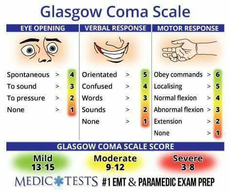
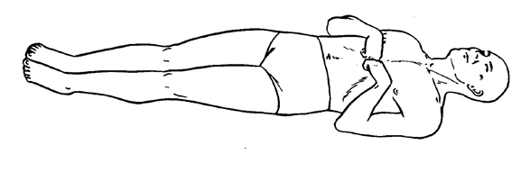

36. 의식장애
- 중요 포인트 2가지!
1. 환자가 의식이 없다면 평가 및 조치 후 보호자에게 병력청취 / 의식이 있다면 환자에게 병력청취!
2. ABCDE -> 병력청취 -> 신체진찰 -> 보호자에게 설명
평가 목표
원인 | ||
중추신경계
| 뇌경색, 뇌출혈, 외상 등
| |
전신성
| 대사성: 저혈당, DKA/HHS, 간성혼수 등 약물: 알코올, 수면제 등 기타: 베르니케 증후군, 요독증 | |
평가목표 1) 의식장애를 호소하는 환자(보호자)를 대상으로 병력청취와 신체진찰 2) 원인질환의 감별과 적절한 진단 및 치료 계획을 수립 3) 특히 응급치료가 필요한 환자를 감별 | ||
구체적인 성과 | ||
병력 청취
| 의식 상태를 확인하고 환자(보호자)로부터 발생시점과 경과를 파악
| 의식 상태 확인(응급처치) VS -> 의식확인 -> ABC -> Exposure -> GCS 1. A(Airway): 기도폐쇄를 유발할 수 있는 요소 확인 - 필요 시 기관삽관, 윤상갑상연골절개술 2. B(Breathing): 보조적 산소투여, 흉부&경부 시진/청진/촉진 3. C(Circulation): 출혈량 예측, 수액투여 및 수혈, 지혈 -> 말초 정맥관 삽입 4. D(Disability): A-B-C 이후 신경학적 검사 -> GCS 평가 5. E(Exposure): 신체를 완전히 노출시켜 기타 손상 평가, 등 확인 시 경추의 지속적 교정 필요 발생 시점 언제: 발생 시점 확인 갑자기: 갑자기(뇌졸중/부정맥), 서서히(간성혼수/대사성) 상황 점점 나빠지는지 |
| 유발요인 및 원인질환을 파악
| 환자 주변 상황: 약병, 술병 양상: 의식을 잃었을 때 어떤 모습? - 주변 출혈(shock)/대소변 실수/팔다리 떪/환자 자세(경련) 동반증상 - 뇌졸중) 두통/구토/말 어눌/시야장애/팔다리 힘빠짐 - 뇌수막염) 최근 감기 증상 - 저혈당) 식은땀/최근 식사 - 알코올) 입에서 냄새/눈풀림 - 간성혼수) 황달/복수/토혈/흑색변/부종 기저 질환: 당뇨(저혈당), 고혈압(뇌출혈), 간질환(간성혼수), 신질환(요독증), 신경계질환, 정신과질환 (약물 중독) |
신체 진찰 | 의식상태를 평가하고 신경학적 이상을 확인하는 신체진찰
| GCS 확인: 눈뜨기(E4), 언어 반응(V5), 운동 반응(M6) 합산 점수 측정 신경학적 진찰 눈 - 동공 반사: 두 손가락으로 눈꺼풀을 벌리고 검사 - 안구 운동: 눈을 검사자가 뜨게 한 상태에서 고개를 좌우상하로 움직임 + Corneal reflex: 휴지나 면 조각으로 각막 문지르듯 자극 + 안저검사 입: 탈수소견, 혀 깨뭄, 냄새 + gag reflex 목: 경동맥 청진 가슴: 심음, 호흡음 + 간 비장 타진/촉진 피부: 피부긴장도, 하지 부종 팔다리: 감각, 운동, DTR, 병적반사 - 팔 다리 통증 자극 -> 자극을 회피하려는 시도 (없으면 척수와 뇌간 사이 감각 및 운동 연결의 비정상) - Motor tone: 손, 무릎 -> 부드러운 저항 - 병적반사: 바빈스키 이상 시 발바닥이 펴짐 = UMN 질환 |
| 전신성 원인의 신체적 이상을 확인하는 신체진찰
| 목: 경동맥 청진 가슴: 심음, 호흡음 + 간 비장 타진/촉진 피부: 피부긴장도, 하지 부종 |
진단 | 원인질환을 감별할 수 있는 진단계획을 수립
| 뇌수막염: 뇌척수액 검사, 혈액 배양 검사
|
| 응급치료가 필요한 질환의 감별을 위한 검사계획을 수립
| 기본 검사: 뇌 CT/MRI, 혈액검사 - ABGA, 혈당, CBC, LFT, BUN/Cr, 소변 검사 |
치료 | 원인에 따른 치료계획을 수립
| 뇌경색: 입원하여 응급치료, 혈전 용해제, 항응고제, 항혈소판제, 뇌출혈: 입원하여 응급치료, 혈압/뇌압 낮추기 뇌수막염: 경험적 항생제 -> 항생제 (세균성), 경과관찰 (바이러스성) 저혈당: 당 공급, 저혈당 교육 DKA/HHS: 수액, 인슐린 간성 혼수: 락툴로오즈 관장, 원인 질환 치료 베르니케-코사코프: 입원하여 고용량 비타민 B1 (티아민) 약물/알코올: 약물/알코올 중단 |
| 응급치료가 필요한 환자를 선별하고 치료계획을 수립
| ABC: 기도확보 후 산소 공급, 수액 정주 |
환자교육 | 응급조치에 대해 교육
| ABC: 기도확보 후 산소 공급, 수액 정주 생체 징후와 의식 수준이 낮고, 의심되는 질환으로 보아 응급 상황입니다. 초반에 응급 조치인 기도 확보하고 산소를 공급하면서 수액을 공급했지만 바로 입원해 추가적 검사와 집중적인 치료가 필요합니다.으의 |
| 의식이 없는 환자의 경우 동행한 보호자에게 진단과 치료계획을 교육
| 원인 질환에 따른 교육 뇌졸중 - 혈압관리 뇌수막염 - 격리치료 저혈당 - 저혈당 교육 DKA/HHS - 철저한 혈당 조절 간성 혼수 - 저단백질식이 베르니케-코사코프 - 금주, 충분한 휴식, 균형잡한 식사 약물/알코올 중독 - 약물/알코올 중단 |
| 검사와 치료에 대한 동의를 구할 수 있는 상태인지 판단
| 보호자에게 동의 얻기 - 환자의 의식이 없어 보호자님께 동의를 얻고자 합니다. 괜찮으신가요? |
| 환자의 권리를 존중하며 의사결정
| 환자의 의식이 명료하지 않더라도, 동의를 구할 수 있는 수준인지 먼저 판단하는 모습 - 환자분 제 말 들리세요?
|
| 보호자나 목격자로부터 적절한 정보를 얻을 수 있음 | 보호자에게 병력청취 |
원인 질환 정리
질환 | 질환 설명 | 병력청취 | 신체진찰 | 검사 | 치료 | |
중추신경계 | 뇌경색 | 뇌혈관이 막혀 뇌가 손상되어 정신이 흐려짐 | 갑자기 발생한 국소신경학적 이상, 고령, 고혈압, 당뇨, 고지혈증, 심질환 | 국소신경학적 이상, DTR 증가 | 뇌 CT/MRI 뇌혈관조영술 | 입원하여 응급치료 혈전 용해제, 항응고제, 항혈소판제 카테터 시술 (last normal time으로부터 4.5시간 이후) |
| 뇌출혈 1+1 | 뇌혈관이 터져 피가 고이고 뇌가 눌리면서 의식이 떨어짐 | 갑자기 발생한 두통, 오심/구토, 고혈압 병력 | 수막 자극 징후, 국소 신경학적 이상 | 뇌 CT/MRI | 입원하여 응급치료 혈압 조절, 뇌압 조절, 필요시 수술 |
| 뇌수막염 2+1 | 뇌를 싸고 있는 막에 염증 뇌가 붓고 열이 나면서 의식저하 | 최근 두통, 발열, 감기 증상, 경련 | 수막 자극 징후 | 뇌척수액 검사 혈액 배양 검사 뇌 CT/MRI | 항생제 (바이러스성은 경과관찰) 격리 치료 안내 |
대사성 | 저혈당 1
| 혈당이 너무 낮아 뇌에 필요한 에너지가 부족 | 당뇨, 인슐린 치료력, 무리한 운동이나 결식 | 식은땀, 의식 소실 | 혈당검사 | 당 공급 저혈당 교육 |
| 당뇨병 케톤산증 | 혈당이 조절되지 않아 산성 물질과 탈수가 생김 | T1DM, 빠르게 진행, 유발 요인(인슐린 중단, 감염, 수술), 다뇨, 탈수 증상, 오심/구토, 복통 | 아세톤 냄새, kussmaul 호흡 | 혈당검사 동맥혈검사 소변검사 | 수액 투여, 인슐린 |
| 고삼투압 고혈당 | 혈당이 너무 높아 몸속 수분 빠짐 뇌 기능이 떨어지면서 정신이 흐려집니다 | T2DM, 고령, 서서히 수 주간 진행, 유발 인자 (뇌졸중, 폐렴, 식사량 감소 등), 다뇨, 체중 감소, 탈수 증상 | - | 혈당검사 동맥혈검사 소변검사 | 수액 투여, 인슐린 |
| 간성혼수 | 간이 해독을 못해 독성 물질이 쌓여 머리가 혼란해짐+의식저하 | 간질환력, 지남력 장애, 황달, 복수, 성격변화, 간염/간암 병력 | 퍼덕떨림, 황달, 복수, 하지부종 | 혈액검사 - 간기능검사, 전해질검사, 암모니아, 간초음파 | 락툴로오즈 관장 원인 질환 치료 |
전신 | 베르니케-코사코프 증후군 | 술을 오래마시면 음식 섭취감소+영양소 흡수방해= 비타민 B1이 부족해져 뇌가 에너지를 못 씀 | 알코올 사용장애 병력, 전신 쇠약, 기억력 저하, 안구 운동 이상, 보행장애 | 이상 안구 운동, 운동 실조 | 뇌 CT/MRI | 입원하여 고용량 비타민 B1 투여 |
| 요독증 | 콩팥이 망가져 노폐물이 쌓여 뇌 기능이 떨어짐 | 만성 신부전 병력, 투석 받은 병력, 피로, 식욕저하, 오심, 구토 | 결막 창백, 하지 부종 | 혈액검사 - BUN/Cr 소변검사 | 혈액 투석, 신장 이식 |
| 저체온증 | 체온이 너무 내려가 뇌 활동이 느려져 정신 흐려짐 | 심부체온 35도 이하, 추운 환경에 노출, 떨림 | 피부 청색증, 맥박 호흡수 저하 | 심부 체온 측정 심전도 | 젖은 옷 제거, 따뜻한 담요 덥기, 따뜻한 수액 공그 |
| 저나트륨 | 나트륨이 부족해 물이 뇌 안으로 들어가면서 뇌 기능이 떨어져 정신 흐려짐 | 최근 구토, 설사, 식사량 감소, 이뇨제 사용, 경련 | 피부 긴장도 감소 | 혈액검사 - 전해질 소변 검사 | 3% hypertonic saline |
약물 | 알코올 | 술에 의해 뇌가 억제되거나 금단 시 뇌가 과하게 흥분 | 술을 너무 많이 마심 | 알코올 냄새 | 혈액 검사 - 혈중 알코올 농도, 혈당 | glucose 정주, 산소 공급, 심하면 혈액 투석 |
| 약물 | 약의 작용으로 뇌 활동이 억제돼 졸리거나 의식이 떨어짐 | BDZ, 마약성 진통제 사용력 | 호흡수 저하, 동공 축소 | 독성 선별검사 | 해독제 |
| 이산화탄소 | 일산화탄소의 중독으로 뇌로 가는 산소가 부족하여 의식이 떨어짐 | 화재 현장 생존자, 밀폐된 공간에서 히터 사용, 두통, 어지럼, 구역 | - | 혈액검사 - COHb | 고압산소치료 |
ABCDE | 자기소개 - 보호자인지 확인/동의 - 환자 VS 확인 - 환자분~! 의식 소실 확인 - 기도확보 호흡평가 피부청색증 확인 - GCS - 응급처치 (정맥로 확보 수액치료, 기도확보 산소공급) 필요한 처치 다 되었습니다 - 보호자분 오세요. 1. V/S 확인 2. ABC 확인: 기도 확보, 호흡 평가, 피부 청색증/곤봉지 확인 3. GCS 확인: 8점 이하면 intubation 필요/8점 초과면 마스크 산소 공급 - 환자분 제 말 들리세요? - 눈 뜨기: 눈 떠보세요 - 언어 반응: 여기 어디인가요? 오늘 몇월 몇일이죠? 제가 누군지 아시겠어요? - 운동 반응: 팔 들어보세요  4. Trauma 확인: 머리와 배에 외상 흔적 확인 5. ABC 확보 (응급처치): 산소공급 + 정맥로 확보하여 수액공급 -> 우선적으로 환자 평과와 필요한 조치 시행하였습니다. 환자분에 대해 몇가지 질문 드리겠습니다. | |||
O | 언제 - 언제 쓰러졌나요? 언제 발견했나요? 언제가 마지막으로 정상? 갑자기 / 상황 | |||
L | 주변 상황 - 약병, 술병 | |||
D | - | |||
Co | 의식이 좋아졌다 나빠졌다 | |||
Ex | 이전 경험 – 치료 | |||
C | 양상) 의식을 잃었을 때 어떤 모습? - 주변 출혈/대소변 실수/팔다리 떪/환자 자세 바뀜 | |||
A
| 전신) 발열/오한/체중변화/피로/식사량 저하 응급/탈수) 목마름/어지럼/두근거림/숨 참/소변량 감소
뇌졸중) 두통/구역/구토/말 어눌/시야장애/팔다리 힘빠짐 뇌수막염) 최근 감기 증상/목 뻣뻣 저혈당) 식은땀/최근 식사 알코올) 입에서 냄새/눈풀림 간성혼수) 황달/복수/토혈/흑색변/부종 | 전신) 발열/오한/체중변화/피로/식사량 저하 응급/탈수) 목마름/어지럼/두근거림/숨 참/소변량 감소
소화기) 구역/구토/토혈/혈변/황달 신경) 두통/구토/말 어눌/시야장애/팔다리 힘빠짐 뇌수막염) 최근 감기 증상 알코올) 입에서 냄새/눈풀림
| ||
F | - | |||
E | 마지막 건강검진? | |||
과 | 현재 앓고 계신 질환이 있나요? 기본 : 고혈압/당뇨/고지혈증/간질환/결핵 신장질환, 뇌질환, 정신과 질환 | |||
외 | 수술받은 적이 있나요? (특히 두부 외상) | |||
약 | 복용중인 약물? - 있다면 과량 복용? r/o 약물중독 | |||
사 | 기본 : 음주/흡연/커피/직업/스트레스/식습관/운동 특히 알코올 관련 자세히! 최근 식사 잘 했는지 | |||
가 | 간질환, 뇌졸중 | |||
여 | 규칙적, 월경량 변화 | |||
PEx | 동의 구하기 손 씻기 | |||
| 기본 | 눈 - 동공 반사: 두 손가락으로 눈꺼풀을 벌리고 검사 - 안구 운동: 눈을 검사자가 뜨게 한 상태에서 고개를 좌우상하로 움직임 입: 탈수소견, 혀 깨뭄, 냄새 목: 경동맥 청진 가슴: 심음 피부: 피부긴장도, 하지 부종 팔다리: 감각, 운동, DTR, 병적반사 - 팔 다리 통증 자극 - Motor tone: 손, 무릎 - 병적반사: 바빈스키 | ||
| 추가 | 눈 + Corneal reflex: 휴지나 면 조각으로 각막 문지르듯 자극 + 안저검사 입 + gag reflex 가슴호흡음 + 간 비장 타진/촉진 | ||
| 협조해주셔서 감사합니다. 불편한 건 없으셨나요? 손씻기 | |||
| 기본!! (응급조치)
| 뇌 CT/MRI 혈액검사 - ABGA, 혈당, CBC, LFT, BUN/Cr 소변 검사
| 전해질 균형을 위한 수액요법 산소공급
| |
| 뇌경색 | 뇌혈관 조영술 | 입원하여 응급치료, 혈전 용해제, 항응고제, 항혈소판제 | |
| 뇌출혈 |
| 입원하여 응급치료, 혈압/뇌압 낮추기 | |
| 뇌수막염
| 뇌척수액 검사, 혈액 배양 검사 | 경험적 항생제 -> 항생제 (세균성), 경과관찰 (바이러스성) | |
| 저혈당 |
| 당 공급, 저혈당 교육 | |
| DKA/HHS |
| 수액, 인슐린 | |
| 간성 혼수 |
| 락툴로오즈 관장, 원인 질환 치료 | |
| 베르니케-코사코프 |
| 입원하여 고용량 비타민 B1 (티아민) | |
| 약물/알코올 중독 |
| 약물/알코올 중단 | |
교육 | 생활습관 교정 (안심/응급/회피교정 - 술담커식운스, 검진접종) [안심] 환자분께서 의식이 없어 많이 걱정되고 놀라셨을 것 같습니다. 병원에 입원해 즉각적인 치료를 수행해 원인을 해소하면 의식을 차릴 가능성이 높으니 너무 걱정하지 않으셨으면 합니다. [응급] 생체 징후와 의식 수준이 낮고, 의심되는 질환으로 보아 응급 상황입니다. 초반에 응급 조치인 기도 확보하고 산소를 공급하면서 수액을 공급했지만 바로 입원해 추가적 검사와 집중적인 치료가 필요합니다. 보호자에게 동의 얻기 - 환자의 의식이 없어 보호자님께 동의를 얻고자 합니다. 괜찮으신가요? 다음번에도 이렇게 의식을 잃으시는 일이 발생하시면 지체 없이 119로 바로 신고해주세요. [회피교정] 뇌수막염 - 격리치료 저혈당 - 저혈당 교육 DKA/HHS - 철저한 혈당 조절 간성 혼수 - 저단백질식이 베르니케-코사코프 - 금주, 충분한 휴식, 균형잡힌 식사 약물/알코올 중독 - 약물/알코올 중단 [검진접종] | |||
PPI | 궁금하신 점 있으실까요? | |||
<GCS>
눈 뜨기: 눈 떠보세요
언어 반응: 여기 어디인가요? 오늘 몇월 몇일이죠? 제가 누군지 아시겠어요?
운동 반응: 팔 들어보세요
눈 뜨기 (eye opening) | 언어 반응 (best verbal response) | 운동 반응 (best motor response) |
자발적으로 눈을 뜬다 - 4 | 적절하고 지남력 있음 - 5 | 명령에 따른다 - 6 |
명령에 따라 눈을 뜬다 – 3 | 지남력 없고 혼돈된 말 - 4 (질문에 대한 유사한 얘기) | 통증 자극을 주면 국재성 반응 존재 - 5 (통증 자극에 손이나 발로 침) |
통증 자극에 눈을 뜬다 - 2 | 부적절하고 혼란된 말 – 3 (말도 안되는 대답) | 통증 자극에 도피성 반응 - 4 |
눈을 안 뜬다 - 1 | 이해할 수 없는 소리를 낸다 - 2 | 통증 자극에 이상 굴절 반응 - 3 (Decorticated response) |
| 소리 조차 못 낸다 - 1 | 통증 자극에 이상 신전 반응 – 2 (Decerebrated response) |
|
| 운동 반응이 없음 - 1 |
15~13: mild injury / 12~9: moderate injury / 8~3: severe injury
(15 = alert / 14~13 = stupor / 12~8 = stupor / 7~4 = semicoma / 3 = coma)
통증 자극
- 손가락 끝을 세게 쥐어 압력을 준다
- supraorbital pressure: 눈의 medial part 위쪽을 10초 정도 세게 누른다
종류 | 손상부위 |
|
Decorticate posture (제피질 자세) | cortex -> red nucleus 위족 손상 시 rubrospinal tract에 의해 상지 flexion | 다리 폄, 팔 굽힘  |
Decerebrate posture (제뇌자세) | midbrain (+ below midbrain) -> vestibulospinal tract만 남아서 상하지 모두 extension | 다리 폄, 팔 폄  |
의식 단계
| 설명 | 명령에 반응 | 자발적 운동 내장, 방광 자동조절 | 통증에 대한 반사 반응 |
Alert 명료 | 자발적으로 눈 뜸 | O | O | O |
Drowsy 기면 | 작은 자극에 눈 뜸 but 바로 잠듦 | O | O | O |
Stupor 혼미 | 통증 자극에 눈 뜸 but 바로 잠듦 | X | O(!) | O |
Semicoma 반혼수 | 눈 안뜸 | X | X | O |
Coma 혼수 | 눈 안뜸 | X | X | X |